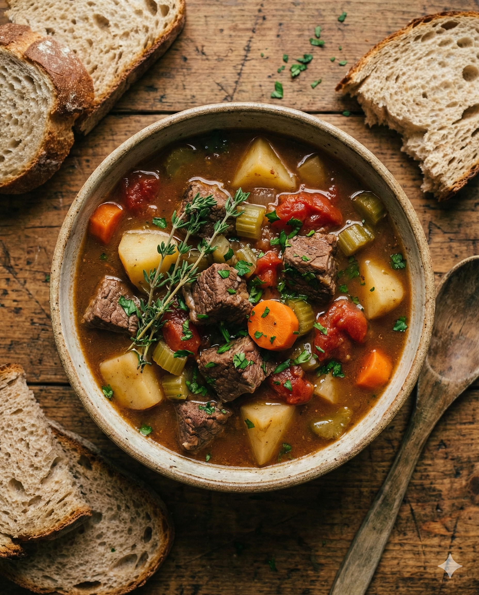

Discover the fascinating journey of America's most democratic dish — from Irish immigrant roots to the campfires of the Great Depression, Mulligan Stew tells the story of resilience, community, and culinary creativity.
Years of History
Folk Songs Reference It
Thousand Hobos (1930s peak)
Million Kids Watched TV Show
From Irish cottages to American railroad camps, trace the remarkable journey of this beloved communal dish through the decades.
The name "Mulligan" derives from the common Irish surname Ó Maolagáin. During the Great Famine (An Gorta Mór) of 1845-1852, over one million Irish fled to America, bringing their tradition of making hearty stews from whatever ingredients were available.
The Transcontinental Railroad (completed 1869) employed thousands of workers who needed cheap, filling meals. Irish, Chinese, and other immigrant laborers created communal cooking traditions in railroad camps, with each worker contributing what they could to a shared pot.
Following the Panic of 1893, a severe economic depression, thousands became migrant workers traveling by rail. These "hobos" established camps called "jungles" near rail yards, where Mulligan Stew became the centerpiece of their communal survival system.
Jack London's 1907 book "The Road" documented hobo culture, including Mulligan Stew. The term appeared in newspapers nationwide, and the dish became romanticized as a symbol of American frontier spirit and working-class ingenuity.
The stock market crash of 1929 left 25% of Americans unemployed. Mulligan Stew became a survival staple in "Hoovervilles" (shanty towns) and soup kitchens. Eleanor Roosevelt even promoted economical stew recipes to help struggling families.
The "nose-to-tail" and zero-waste cooking movements have revived interest in Mulligan Stew. Farm-to-table restaurants now offer elevated versions, while food historians recognize it as an important piece of American culinary heritage.
Mulligan Stew represents a unique intersection of history, sociology, and culinary tradition that tells the story of working-class America.
Hobo culture had strict ethical codes documented in early 20th-century sources. The Mulligan Stew embodied their principle of mutual aid: take only what you need, always contribute before eating, respect the cook ("mulligan mixer"), and leave the camp better than you found it.
Food historians consider Mulligan Stew one of America's few truly "democratic" dishes. Unlike cuisine tied to specific regions or ethnic groups, it emerged from the collision of Irish, German, Italian, Chinese, and African-American cooking traditions in railroad camps and urban tenements.
Jack London's "The Road" (1907) first brought Mulligan Stew to national attention. John Steinbeck depicted communal cooking in "The Grapes of Wrath" (1939). Woody Guthrie sang about it, and the USDA named a 1970s nutrition show after it.
Explore different regional variations of this classic American dish. Remember, the beauty of Mulligan Stew is its flexibility — use what you have!

This traditional recipe captures the essence of the original Mulligan Stew — hearty, filling, and made with humble ingredients that transform into something extraordinary through slow cooking.
A plant-based twist on the classic that honors the original spirit of using available ingredients. Hearty legumes and mushrooms provide satisfying depth and protein.
An elevated take on the humble classic, featuring premium cuts, wine reduction, and sophisticated seasonings. Perfect for dinner parties or special occasions.
How much do you know about the history and culture of Mulligan Stew? Take our quiz to find out!
The name "Mulligan" derives from the Irish surname Ó Maolagáin, used as a generic term for Irishmen. Irish immigrants fleeing the Great Famine (1845-1852) brought their tradition of making hearty stews from available ingredients to America. The term first appeared in print in 1899.
"Hobo jungles" (or simply "jungles") were informal encampments near railroad yards documented extensively in Nels Anderson's 1923 sociological study "The Hobo." These communities had their own ethical codes and the communal Mulligan pot at their center. The term "jungle" reflected the dense, hidden nature of these camps.
During the Great Depression (1929-1939), unemployment reached 25% and millions lost their homes. Makeshift camps called "Hoovervilles" (named mockingly after President Herbert Hoover) appeared nationwide. Soup kitchens in New York alone served up to 85,000 meals daily by 1931, and Mulligan Stew—able to stretch limited ingredients—became a survival staple.
Unlike dishes with fixed recipes, true Mulligan Stew has no set ingredients. Its defining characteristics are: (1) it's made from whatever is available, (2) it's traditionally cooked communally with each person contributing something, and (3) no two batches are ever identical. This "democratic" nature—where any ingredient is welcome—is what makes it unique in American culinary history.
Jack London, author of "Call of the Wild," spent time as a hobo in his youth. His 1907 memoir "The Road" documented hobo culture in vivid detail, including the communal cooking of Mulligan Stew. He wrote: "It's a great Mulligan, you know... 'Twas the most democratic society I ever saw." John Steinbeck later depicted similar scenes in his 1939 novel "The Grapes of Wrath."
Questions Correct
Click the cards to discover surprising facts about Mulligan Stew's rich history and cultural impact.
Click to learn the hobo ethic
Hobo ethics required contribution before eating. A "jungle buzzard"—one who ate without contributing—faced exile. Even a single carrot or tending the fire earned you a full bowl.
Click to flip backClick to discover the TV legacy
The USDA's Emmy-winning "Mulligan's Stew" (1972-1981) taught nutrition to 7 million children through PBS, keeping the dish's name alive for a new generation.
Click to flip backClick for the famous author's story
Jack London wrote in "The Road" (1907): "It's a great Mulligan... 'Twas the most democratic society I ever saw." His account brought the dish to national attention.
Click to flip backClick to hear about the songs
Woody Guthrie and Leadbelly referenced Mulligan Stew in their recordings. The dish appears in numerous folk and blues songs from the early 20th century.
Click to flip backClick for regional variations
Regional names include: "Slumgullion" (West), "Burgoo" (Kentucky), "Jungle Stew" (rail yards), and "Stone Soup" (community events). In the UK, it's called "hotpot."
Click to flip backClick for official heritage status
The Smithsonian has documented Mulligan Stew as American culinary heritage. Historians consider it one of the few truly "American" dishes, born from immigrant experience.
Click to flip back